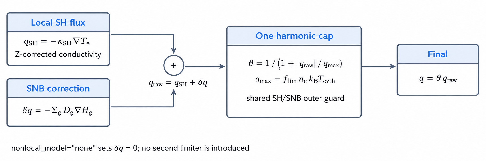
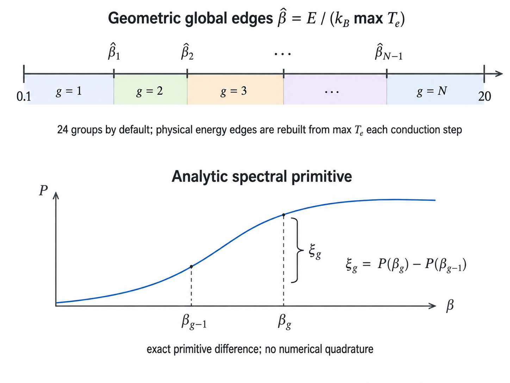

Electron & ion conduction reference
TENRYU's local electron transport combines Spitzer–Härm conductivity with the unconditional Z-dependent γ0 correction, a harmonic flux limiter, and super-time-stepping (STS). In 1D, the opt-in SNB (Schurtz–Nicolaï–Busquet) multigroup model adds a nonlocal correction and couples it in time with the implicit-SNB (iSNB) Picard iteration of Cao 2015. Ion conduction is a separate option.
The physical mechanism
In a laser target, the place where laser energy is absorbed (the dilute corona outside the critical surface) and the place where that energy does work as ablation pressure (the dense ablation front) are spatially separate. Electron thermal conduction is the main energy transport that connects them. Its strength sets the ablation pressure and the mass ablation rate, and it also sets how much heat runs ahead of the front into cold material — the preheat.
The starting model makes the heat flux proportional to the local temperature gradient: \(\mathbf q_{SH}=-\kappa_{SH}\nabla T_e\), i.e. a Fourier law, with the conductivity \(\kappa_{SH}\) taken from Spitzer–Härm (SH) theory of electron–ion Coulomb collisions. The temperature scaling follows from a short chain. Coulomb scattering deflects fast electrons poorly, so the collision frequency drops steeply with speed, \(\nu_{ei}\propto v^{-3}\). Evaluated for thermal electrons (\(v\sim v_{th,e}\propto T_e^{1/2}\)) this gives \(T_e^{-3/2}\), and the mean free path \(\lambda_{ei}=v/\nu_{ei}\) grows as \(\lambda_{ei}\propto T_e^{2}/(n_e Z\ln\Lambda)\) — quadratically in temperature. Since conductivity is roughly "density × thermal speed × mean free path", the density dependence cancels and \(\kappa_{SH}\propto T_e^{5/2}/(Z\ln\Lambda)\) remains. Doubling the temperature multiplies the conductivity by about 5.7 — a strongly nonlinear response. A hotter corona therefore conducts much more strongly, and, as discussed below, becomes numerically "stiff" to integrate explicitly, with a vanishing stable time step. The Fourier law itself is a local approximation — the electron is assumed to feel only the gradient at its own position — and it is justified only while the electron mean free path stays well below the temperature-gradient scale length \(L_T=T_e/|\nabla T_e|\).
Most of the heat, however, is not carried by average thermal electrons. Decomposing the flux by electron energy (the SNB spectral weight \(\beta^4e^{-\beta}/24\) introduced below is this distribution), the contribution peaks for suprathermal electrons moving at roughly \(3–4\,v_{th,e}\). Because the mean free path scales as \(v^4\) (a consequence of \(\lambda=v/\nu\) with \(\nu\propto v^{-3}\)), these electrons have mean free paths 34–44, roughly 80–260 times longer than thermal electrons. The local condition \(\lambda\ll L_T\) can therefore hold when evaluated for thermal electrons while already being violated for the electrons that actually carry the heat. The violation sets in first near the ablation front, where the gradient is steepest.
Even in the strong-gradient limit where the local law fails, there is a firm physical ceiling on the flux: the free-streaming flux \(n_e k_BT_ev_{th,e}\), obtained if the entire thermal energy content streamed one way at the thermal speed. Kinetic calculations and experiments both show that only a fraction of it can actually be sustained, and TENRYU carries that fraction in the coefficient \(f_{lim}\), imposing the cap \(q_{max}=f_{lim}n_ek_BT_ev_{th,e}\). The cap is applied through the factor \(\theta=1/(1+|q_{raw}|/q_{max})\); the resulting flux \(q=\theta q_{raw}\) satisfies, in magnitude, \(1/|q|=1/|q_{raw}|+1/q_{max}\) — the same harmonic composition as resistors in parallel, which is why this is called the harmonic limiter. Where gradients are gentle, \(q\approx q_{raw}\); at strong gradients it saturates smoothly toward \(q_{max}\) with no kink. The local-SH default \(f_{lim}=0.06\) lies in the calibration range long used against direct-drive experiments. Why the SNB default of 0.5 is so much looser is explained below — there the limiter is no longer the physics model, only an outer safety valve against anomalous composite fluxes.
A flux limiter alone cannot represent nonlocal transport. The \(v^4\) mean-free-path scaling produces two consequences at once. First, at the steepest point, the electrons cross the gradient without colliding, so the flux never builds up to the local-gradient prediction: the real flux falls below Spitzer–Härm (flux inhibition). Second, the same electrons keep carrying heat forward for several mean free paths before stopping, heating material beyond the ablation front (preheat). Because a flux limiter can only reduce the local flux, it can approximate the first effect but cannot, in principle, represent the second — moving heat ahead of the gradient. Capturing both requires a nonlocal model that follows electrons by energy and resolves where they reach and where they deposit.
The Schurtz–Nicolaï–Busquet (SNB) model is the standard reduced-kinetic model for this purpose. Instead of solving the full kinetic equation, it splits the SH flux into electron-energy groups and, for each group, solves a diffusion equation for a transport field \(H_g\) (dimensionally a heat flux) whose spatial scale is the group's stopping length \(\lambda_g\) (mean free path, mfp). The spreading of \(H_g\) away from its source — the group's share of the local SH flux — is what represents carriers transporting heat away from the gradient, and the reconstructed correction \(\delta q=-\sum_g(\lambda_g^{tr}/3)\nabla H_g\) both reduces the flux at the steep point and produces preheat ahead of it. In TENRYU, SNB is an additive correction to the same limited SH pipeline, not an alternative solver, and the corrected composite flux passes through the single shared cap. The default mean-free-path calibration (the \(r=2\) form of Sherlock 2017) already folds in electric-field flux suppression, so the optional explicit E-field term defaults off to avoid double counting.
The main numerical challenge is the stability limit of explicit diffusion, \(\Delta t\lesssim\Delta x^2/D\). The thermal diffusivity \(D\propto T_e^{5/2}/\rho\) grows rapidly in a hot, dilute corona, so the stable substep becomes far smaller than the hydrodynamic global step. In a representative GXII corona (coronal cells of the 500 µm benchmark capsule at \(T_e\approx2\) keV, \(\rho\approx10^{-3}\) g/cm³, \(\Delta l\approx50\,\mu\)m), one global driver step would require 130–340 ordinary substeps. Super-time-stepping (STS) replaces that substep chain with a Chebyshev ladder of \(s\) stages whose combined stability interval grows as \(O(s^2)\), so the required stage count is only about the square root of the substep count (\(s\approx\lceil\sqrt{2N_{sub}}\rceil\)) — 16–27 stages in this example. Coefficients are frozen at the entry temperature, and one EOS resynchronization closes the step. Every update is conservative finite volume; per-material resolution and the optional ion-conduction pass reuse the same machinery.
Local Spitzer–Härm model and flux limiter
Electron conductivity is evaluated in the cgs+eV unit system. The mean ionization \(\bar Z\) comes from the material model. Because Coulomb collision rates are governed by the mean of the charge squared, materials that provide the charge-moment ratio \(r_2=\langle Z^2\rangle/\bar Z^2\) replace \(\bar Z\) with the collisional effective charge \(\bar Z r_2\):
$$ \kappa_{SH}=\kappa_0\,\xi(\bar Z)\, \frac{T_e^{5/2}}{\bar Z\ln\Lambda},\qquad \xi(Z)=\frac{(Z+0.24)/(Z+4.2)}{(1+0.24)/(1+4.2)}, $$ $$ \kappa_0=3.06\times10^9 \;\mathrm{erg/(cm\,s\,eV^{7/2})},\qquad \mathbf q_{SH}=-\kappa_{SH}\nabla T_e. $$Here \(\kappa_0\) is the Spitzer prefactor in cgs + eV units, \(\xi(\bar Z)\) is the Z-dependent correction detailed in the list below, \(\ln\Lambda\) is the Coulomb logarithm, and \(\mathbf q_{SH}\) is the resulting unlimited heat flux.
The flux limit is applied per face. The face electron density, temperature, and thermal speed — each the arithmetic average of the adjacent cells — build \(q_{max}\), and the harmonic composition described in the mechanism section caps the flux (\(k_B\) is the eV→erg conversion constant eV_to_erg, as everywhere in the cgs + eV system):
- \(\xi(Z)\). This is the Epperlein–Short fit of Braginskii's γ0(Z), with ξ(1)=1 and ξ(∞)=4.19. It is unconditional in 1D, 2D, per-material conduction, and the SH base flux used by SNB; the removed fixed-coefficient branch cannot be re-enabled.
- \(q_{max}\) and \(\theta\). \(q_{max}=f_{lim}n_ek_BT_ev_{th,e}\) sets the free-streaming fraction and θ provides harmonic interpolation. The local path uses \(q_{raw}=q_{SH}\), whereas SNB uses \(q_{raw}=q_{SH}+\delta q\); SH and SH+δq pass through one shared cap, never a second limiter.
- Face-κ closure. The closure — the rule that builds a face κ from the two adjacent cell values — defaults to
kirchhoff_same_material. On a smooth same-material face it evaluates the strongly nonlinear κ(T) ∝ \(T^{5/2}\) as the secant of its exact integral over the two cell temperatures (a Kirchhoff-transform face average), reducing grid pinning of steep heat fronts. Interfaces, voids, and strong table jumps retain the more conservative harmonic closure. The limiter's SH estimate and the applied flux always use the same closure. - Voids.
cell_is_voidforces κeff=0, forming an adiabatic boundary and preventing floor-density exterior cells from collapsing Δtexp. SNB gives voids an identity row and zeroes adjacent group diffusivities. - SNB groups. Energy groups are laid out geometrically in the temperature-normalized electron energy β̂=E/(kB max Te) over [0.1,
snb_E_max_over_Te], with weights ξg=P(βg)−P(βg−1) formed as exact primitive differences. The two mfp variants are the defaultgeometric_r2and the original Schurtz form. - iSNB Picard. The Cao 2015 coupling freezes (θ, δq), repeats the STS superstep from \(T_e^n\), and recomputes the correction. It performs at least two iterations and uses a flux max-norm relative tolerance; at convergence the amplification factor lies in (0,1) for every Δt, giving unconditional stability.

nonlocal_model="none", δq=0 and the path reduces to the established limited SH flux.Face closure, materials, and voids
A face κ must be composed from the two adjacent cell states; the composition rule is called the closure. The production default is kirchhoff_same_material. On smooth same-material Spitzer faces — and only there — it evaluates the strongly nonlinear κ(T) ∝ \(T^{5/2}\) as the secant of its exact integral over the two cell temperatures (a Kirchhoff-transform face average). A naive two-point evaluation underestimates the face κ just ahead of a steep heat front, which tends to pin the front to the grid; the secant value reduces that tendency. Material interfaces, voids, and strong κ0 table jumps fall back to harmonic closure. The historic harmonic closure remains selectable; it handles material interfaces and large conductivity jumps conservatively — being a harmonic mean, a zero conductivity on either side closes the face. The SH estimate used by the limiter and the applied flux always use the same closure.
The 1D planar, cylindrical, and spherical operators are conservative finite volumes; geometry appears only through face areas \(A_f\) and cell volumes \(V_i\). In per-material mode, each material m gets its own face volume fraction αf,m, temperature, density, \(\bar Z\), lnΛ, and limited κeff,f,m. Each face power enters one neighboring cell with a + sign and the other with a − sign at identical magnitude, so the total Σc,mEe,c,m over cells and materials is conserved exactly (unless a temperature floor intervenes). The aggregate Σmαf,mκeff,f,m schedules STS, but the energy update remains material resolved.
A cell_is_void cell is forced to κeff=0, making its boundary an insulating, adiabatic surface. The mask is also needed for performance: if a floor-density void cell were treated as ordinary matter, the tiny ρcv denominator of the diffusivity κ/(ρcv) would produce an enormous diffusion coefficient, collapse the stability limit Δtexp, and effectively stall STS. SNB applies the same discipline: a void cell becomes an identity row with Hg=0 and the adjacent group diffusivities are zeroed, leaving no path for the group diffusion to carry preheat across a void.
ion_conduction=True adds a pass using ion conductivity κi and the same conservative diffusion machinery; in 2D RZ it uses the electron path's Kershaw nine-point operator. It defaults off because κi≪κe in typical ICF plasmas, but can matter in a dense fuel core.
Super-time-stepping
Because Spitzer conductivity scales as \(T_e^{5/2}\), marching the global step \(\Delta t\) in explicit substeps of size \(\Delta t_{exp}\) would require \(N_{sub}=\lceil\Delta t/\Delta t_{exp}\rceil\) kernel launches. In a representative GXII corona — the same \(T_e\approx2\) keV, \(\rho\approx10^{-3}\) g/cm³, \(\Delta l\approx50\,\mu\)m conditions quoted in the mechanism section — \(N_{sub}\) reaches 130–340. STS widens the stability interval with a Chebyshev ladder and covers the same interval in 16–27 stages (\(s\approx\lceil\sqrt{2N_{sub}}\rceil\)). The procedure is as follows.
One conduction step, step by step
Close every face. Evaluate face κ with
kirchhoff_same_materialon eligible smooth same-material Spitzer faces and harmonic closure on interfaces, voids, and strong table jumps. Per-material conduction constructs and retains each material's face coefficient separately.Limit every face. Form the SH face estimate with that same closure, evaluate \(q_{max}\), and freeze \(\theta=1/(1+|q_{raw}|/q_{max})\). This produces the limited κeff used by the step.
-
Find the explicit limit. Form \(D_{eff}=\kappa_{eff}/(\rho c_v)\) and take the most restrictive cell value (\(\Delta l_c\): the 1D cell width, or \(\sqrt{A_c}\) of the meridian-plane cell area in 2D):
$$ \Delta t_{exp}=C_{cond}\min_c\frac{(\Delta l_c)^2}{D_{eff,c}},\qquad C_{cond}=0.25\ \text{(default)}. $$ -
Choose the stage count. The Chebyshev interval grows as \(O(s^2)\):
$$ s=\max\!\left(1,\left\lceil\sqrt{2\Delta t/\Delta t_{exp}}\right\rceil\right). $$When the configured stage ceiling (
sts_max_stages, default 40) is reached, the requested interval is divided into multiple supersteps. -
Build the ladder. With the default damping ν=0.01 (the Chebyshev damping parameter,
$$ \tau_j=\frac{\Delta t_{exp}} {\nu^2+(1-\nu^2)\cos^2\!\left(\frac{\pi(2j-1)}{4s+2}\right)}, \quad j=1,\ldots,s, $$sts_damping— distinct from the collision frequencies \(\nu_{ei}\), \(\nu_a\) of other pages), constructthen rescale all τj uniformly so the stage times sum to the superstep, \(\sum_j\tau_j=\Delta t\). With the shipped defaults the raw ladder sums to more than \(\Delta t\), so this rescale shrinks the τj.
-
Apply all stages with frozen coefficients. \(D_{eff}\), face κ, and ρcv stay at their entry-\(T_e^n\) values. Only temperature in 1D, or conservative thermal energy in 2D, changes between stages — \(\mathcal M_{1D}\) denotes the conservative 1D face-flux divergence operator and \(\mathcal M^{\kappa}_{Kershaw}\) the 2D Kershaw nine-point diffusion operator, both at the frozen coefficients:
$$ T_{e,j}=T_{e,j-1}+\frac{\tau_j}{\rho c_v}\mathcal M_{1D}(T_{e,j-1}),\qquad E_{c,j}=E_{c,j-1}+\tau_jV_c\mathcal M_{Kershaw}^{\kappa}(T_{e,j-1}). $$Opposite face powers make both finite-volume updates conservative; the per-material path applies the same pairwise update to its frozen material-resolved coefficients.
Resynchronize once. After all stages, one post-conduction EOS forward evaluation rebuilds ee, Pe, and Cv,e from the updated temperature.
SNB multigroup nonlocal model
nonlocal_model="snb" adds the opt-in Schurtz–Nicolaï–Busquet correction to 1D planar, cylindrical, or spherical electron conduction. Each conduction step rebuilds geometric global edges in the normalized electron energy β̂=E/(kB max Te) over [0.1, snb_E_max_over_Te], using 24 groups by default. Each group then solves the following diffusion-type equation for its transport field \(H_g\) (dimensionally a heat flux). The source on the right-hand side is the divergence of \(U_g\), the group's share of the local SH flux; \(H_g\) is that injected source spread out over the stopping-length scale, and its gradient rebuilds the nonlocal correction defined below:
Here \(P(\beta)\) is the cumulative distribution of the Spitzer–Härm heat flux over normalized electron energy — the flux carries a \(\beta^4e^{-\beta}/24\) spectral weight, and \(P\) is its running integral — so the weight ξg is an exact primitive difference, not a numerical quadrature. The total correction is \(\delta q=-\sum_g(\lambda_g^{tr}/3)\nabla H_g\). A cell-centered, volume-integrated FV discretization gives a strictly diagonally dominant tridiagonal system. Groups are solved as a strided batch; face diffusivity is the harmonic mean of neighboring λtr values divided by three, with reflecting closed boundaries.

The representative energy \(\varepsilon_g=(E_{g-1}+E_g)/2\) is evaluated in erg. Two mean-free-path (mfp) variants define the common stopping length \(\lambda_g\) — both \(\lambda_g^{abs}\) and \(\lambda_g^{tr}\) equal this \(\lambda_g\) unless the E-field option below shortens the transport one:
$$ \lambda_g= \begin{cases} \dfrac{2\sqrt2\,\varepsilon_g^2} {4\pi n_e e^4\ln\Lambda\,\sqrt{\bar Z\varphi}}, & \texttt{geometric\_r2}\quad(\text{Sherlock 2017; default}),\\[6pt] \dfrac{2\,\varepsilon_g^2} {4\pi n_e e^4\ln\Lambda\,\sqrt{\bar Z+1}}, & \texttt{original}\quad(\text{Schurtz 2000}), \end{cases} \qquad \varphi=\frac{\bar Z+4.2}{\bar Z+0.24}. $$Normally λabs=λtr. snb_efield="local" shortens only the transport mfp through \(1/\lambda_g^{tr}\mathrel{+}=|e\mathcal E|/\varepsilon_g\), where \(\mathcal E\) (script, to avoid clashing with the energies \(E\)) is the local electrostatic field magnitude evaluated from the plasma state; the option defaults to none because the r=2 calibration already incorporates electric-field suppression, so adding it can double count the effect.
The SNB correction, step by step
Rebuild the groups. At every conduction step, use max \(T_e\) to reconstruct the global geometric β̂ edges over [0.1,
snb_E_max_over_Te] and form the exact primitive-difference weights ξg.Evaluate stopping lengths. Compute each λg from the local electron density, Coulomb logarithm, charge state, and group-center energy, using
geometric_r2by default or theoriginalSchurtz form.Assemble. For every group, volume-integrate the cell-centered FV equation into a strictly diagonally dominant tridiagonal system. Reflecting boundaries close the domain; voids receive identity rows and zero adjacent diffusivity.
Solve all groups. Run the groups together as a strided-batch tridiagonal solve for \(H_g\).
-
Reconstruct the correction. Accumulate groups in fixed order:
$$ \delta q=-\sum_g\frac{\lambda_g^{tr}}{3}\nabla H_g. $$ Compose the raw flux. Form \(q_{raw}=q_{SH}+\delta q\) using the same face-κ closure as the local SH path.
Apply the shared cap. Evaluate \(\theta=1/(1+|q_{raw}|/q_{max})\) once and apply \(q=\theta q_{raw}\); there is no second SNB limiter.
Close the iSNB Picard loop. Freeze (θ, δq), repeat the full STS superstep from \(T_e^n\), and recompute the correction at the endpoint. Run at least two iterations and test the relative flux max norm against
snb_picard_rtol, up tosnb_picard_max_iters. Nonconvergence is reported and the final iterate is accepted; at convergence the amplification factor is in (0,1) for every Δt.
Selecting SNB loosens the default f_lim to 0.5. How strongly the flux is suppressed is computed by SNB itself, so this value does not tune the nonlocal strength; the loose limiter remains only as an outer safety valve that stops an anomalous composite flux if one ever arises. Studio applies the same model-dependent default.
Namelist controls
These are the principal keys under Numerics.conduction. See the namelist reference for the complete surface and validation rules.
| Key | Default | Purpose |
|---|---|---|
conduction.enabled | True | Enables the electron-conduction operator. |
f_lim | SH: 0.06SNB: 0.5 | Shared outer harmonic flux cap; the SNB value is a safety valve, not a physics model. |
ion_conduction | False | Adds the independent ion-conduction pass. |
solver | "sts" | Accepted values: "sts" (default explicit Chebyshev super-time-stepping), "implicit", and "hypre" — the latter backed by the hypre library's BoomerAMG preconditioner [6,7] and requiring the optional Hypre build dependency. SNB requires "sts". |
face_kappa_policy | "kirchhoff_same_material" | Production-default same-material Kirchhoff secant face-κ; historic "harmonic" closure remains selectable. |
nonlocal_model | "none" | "none" or 1D "snb". |
snb_n_groups | 24 | Number of SNB energy groups. |
snb_E_max_over_Te | 20 | Upper edge of the geometric β̂ ladder. |
snb_mfp | "geometric_r2" | Sherlock r=2 default or "original". |
snb_efield | "none" | Optional local E-field mfp correction is "local". |
snb_picard_max_iters | 8 | iSNB Picard cap, with at least two iterations. |
snb_picard_rtol | 0.01 | Relative flux max-norm convergence tolerance. |
Verification
- The four SNB gates G1–G4: G1 is the no-regression gate: with
nonlocal_model="none", all six GXII FLD metrics stay bit-identical to a feature-off run (relative difference 0). G2 checks the local limit: that SNB reduces to local SH as the mean free path λ→0, tested through the flux-reduction ratio for a sinusoidal temperature perturbation (the dispersion response) \(R(k)=\sum_g\xi_g/(1+\lambda_g^{abs}\lambda_g^{tr}k^2/3)\), holding the discrete operator's \(R_{disc}\) to ∣R−Rdisc∣≤5.5×10−8 at tolerance 10−3; it further checks the small-k asymptote \((1-R)\propto k^2\) via a log–log slope of 1.986 (≈2), and that a two-rung tanh-temperature-ramp amplification of 100.7 stays within the derived curvature bound. G3 is the analytic comparison: the discrete Epperlein–Short solution matches within 7.2×10−7 (gate 3×10−3; the dispersion check covers the band \(k\lambda_{ei}<0.5\)). G4 is the conservation gate, closing planar, cylindrical, and spherical ledgers to 7.4×10−17 against a 10−14 gate. - STS twins: 1D zero-flux eigenmodes with analytic solutions exercise the spherical, planar, and cylindrical STS ladders against their implicit and per-material twins, checking the spatial order of accuracy and closed-domain electron-energy conservation. In addition,
test_conduction_pattle_1dgates the propagation of the \(T^{5/2}\) heat front against the Pattle nonlinear-diffusion similarity solution [4]. - GXII golden: an integrated regression with conduction active gates absorbed energy, bang time, minimum shell radius, peak density, areal density, and central temperature.
- Kirchhoff diagnostics: on steep same-material faces, four checks run: the ratio of heat flow and time step between the Kirchhoff and harmonic closures, that \(|q|\le q_{max}\) holds while the limiter is active, the time-step protection given by a Gershgorin-circle diagonal-dominance audit of the frozen-coefficient operator (zero-volume cells excluded), and that the closure falls back to harmonic correctly at material interfaces.
References
- L. Spitzer, Jr. and R. Härm, "Transport Phenomena in a Completely Ionized Gas," Phys. Rev. 89, 977–981 (1953). doi:10.1103/PhysRev.89.977
- S. I. Braginskii, "Transport Processes in a Plasma," Reviews of Plasma Physics 1, 205–311 (1965).
- E. M. Epperlein and R. W. Short, "A Practical Nonlocal Model for Electron Heat Transport in Laser Plasmas," Phys. Fluids B 3, 3092–3098 (1991). doi:10.1063/1.859789
- R. E. Pattle, "Diffusion from an Instantaneous Point Source with a Concentration-Dependent Coefficient," Q. J. Mech. Appl. Math. 12, 407–409 (1959). doi:10.1093/qjmam/12.4.407
- V. Alexiades, G. Amiez, and P.-A. Gremaud, "Super-Time-Stepping Acceleration of Explicit Schemes for Parabolic Problems," Commun. Numer. Methods Eng. 12, 31–42 (1996). doi:10.1002/(SICI)1099-0887(199601)12:1<31::AID-CNM950>3.0.CO;2-5
- R. D. Falgout and U. M. Yang, "hypre: A Library of High Performance Preconditioners," Computational Science—ICCS 2002, LNCS 2331, 632–641 (2002).
- V. E. Henson and U. M. Yang, "BoomerAMG: A Parallel Algebraic Multigrid Solver and Preconditioner," Appl. Numer. Math. 41, 155–177 (2002).
- G. P. Schurtz, Ph. D. Nicolaï, and M. Busquet, "A Nonlocal Electron Conduction Model for Multidimensional Radiation Hydrodynamics Codes," Phys. Plasmas 7, 4238–4249 (2000). doi:10.1063/1.1289512
- M. Sherlock, J. P. Brodrick, and C. P. Ridgers, "A Comparison of Non-Local Electron Transport Models for Laser-Plasmas Relevant to Inertial Confinement Fusion," Phys. Plasmas 24, 082706 (2017). doi:10.1063/1.4986095
- D. Cao, G. Moses, and J. Delettrez, "Improved Non-Local Electron Thermal Transport Model for Two-Dimensional Radiation Hydrodynamics Simulations," Phys. Plasmas 22, 082308 (2015). doi:10.1063/1.4928445
- A. Marocchino, M. Tzoufras, S. Atzeni, et al., "Comparison for Non-Local Hydrodynamic Thermal Conduction Models," Phys. Plasmas 20, 022702 (2013). doi:10.1063/1.4789878